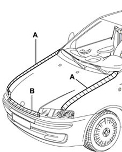

7025OA BONNET NOISE LOCALISATION
- Path
- Test > 70 FITTINGS > 7025 COMPARTMENT COVERS > 7025O COMPARTMENT LID TESTS > 7025OA BONNET NOISE LOCALISATION
- Kind
- test / check procedure
- Applies to
- all engines; all production periods
- Interactive page
- https://sloeber94.github.io/elrnDB-fCrm/en/#/194003985
Applies to: all engines; all production periods
Tape the various areas illustrated in the diagram using bodywork gummed paper.

Applies to: all engines; all production periods
Carry out a road test letting the vehicle gradually reach the speeds where the noise starts: if the wind noise persists, check that the plugs are present and that the rubber cable ducts in the fire-proof partition are correctly fitted.
Remove the gummed paper from the area and repeat the road test: if the wind noise persists, check the buffers where the bonnet and the wings match at the rear.
Remove the gummed paper from the area and repeat the road test: if the wind noise persists, check the condition of the front weatherstip and make sure it is correctly fitted (it should adhere perfectly to the crossmember when the bonnet is closed).